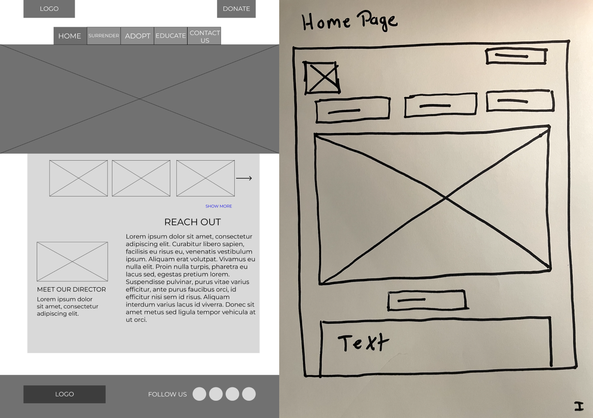
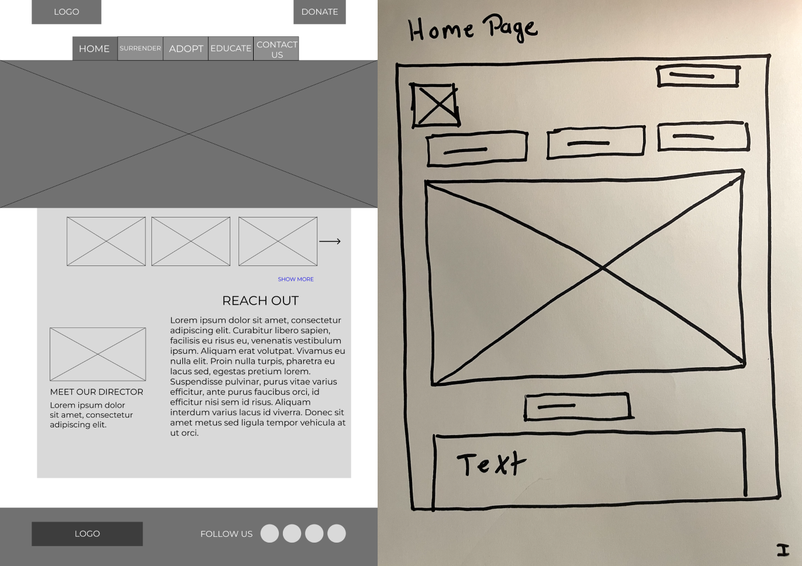

- Introduction
- Research
- Problem
- Designs
- Solution
TRSAR is a female-directed, fully-permitted 501(c)3 nonprofit rescue that services the state of Texas.
They were the first nonprofit rescue dedicated to reptiles, parrots, and exotics in Texas.
I redesigned TRSAR’s desktop and mobile homepage to increase adoptions of rescued animals as a project for the UTSA UX/UI Bootcamp. My team included two other soon-to-be UX designers. My team role and primary responsibilities were copywriting, user research analysis, and editing/redlining. We had a timeline of two weeks to complete this project.
My focus was on delivering a website to the client that would gain approval, so when our team looked at the original website, we made choices based on that view. We wanted the client to want the website, not just like it. We drew inspiration from the original design to cater to that.
My secondary goal was to focus on self-development by producing polished computer products while also being a good communicator; I like environments that communicate well to stay coordinated, so I practice too.


We conducted research to figure out reasons for why people are reluctant to adopt reptiles and other small animals. In addition, I conducted a competitor analysis to determine the opportunities the organization could consider improving on in comparison to other small animal rescue organizations.
We found out that people struggle with adopting reptiles as pets due to lack of education. Neither the potential adopter nor their families understood how to maintain a home for an exotic animal. In addition, there were issues involving the cost of owning a small animal and a lack of space in the adopter’s home.
To conduct this research, my team used Google Survey forms on social media to learn more about potential small animal owners. We received 27 responses, each with unique answers and variants of each other. As stated above, we found common themes among the answers, but our research wasn’t done. We also conducted a competitor analysis of five similar nonprofit organizations and found a common theme on each website: the focus on either adoption, education, or donations is the center focus of the front page. TRSAR didn’t have this focus on the front page, so that became a puzzle to solve later in our designs.
I sorted data into categories on an affinity diagram to find common themes, as stated above. We used a similar method before reaching the final form of our target persona; our group originally had a persona depicting our typical user as a teacher in his late forties looking for a way to make science fun for his students. After sampling data from the surveys used in our research, we quickly redefined our proto persona into a user persona, an 18-23 year old male wanting to own a unique exotic pet.

We began our brainstorming phase believing that providing an easy and informed website to adopt reptiles/birds/small animals for aspiring exotic pet owners will achieve an easy, informed adoption.
After brainstorming, I worked with my team to come up with ideas in an “I Like, I Wish” exercise. We had some unique ideas but quickly settled on two Wishes that needed to be fulfilled: education and pictures.
We started our website designs on pen and paper or on Figma. Soon after, I completed my part of guerilla testing. I found that our users could easily navigate the sketches and had little trouble, a great sign!
Next up, we added content, color, and tightened up any details that needed it. This was our mid-fidelity prototype, a part of the process that would be refined into the final prototype after some more user testing.
 



This is the product of multiple iterations and testing. Working together with my team in Figma, we designed the website to be fun and interesting to view, then turned that design into a functioning interactive prototype. I learned from this project how people want an easy and informed way of completing a task, such as an adoption. People like the confidence of knowing what they’re getting into and they want good information presented in digestible pieces. The next steps would be to keep testing prototypes and to create more wireframes to show the full capabilities of the organization.